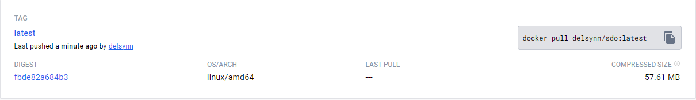

Keuzes van de opdrachten
Wij kozen voor de volgende opdrachten:
-
Major Assignment CI/CD
- Github Actions (Testing and building pipelines)
- Three different environments (Main, Dev and QA)
- Argo Rollouts (Met Canary Deployment bij ons)
- ArgoCD syncs off our repository
-
Autoscaling with Keda
- Cronscaler
- CPU-scaler
- Scaling off metrics scraped by Prometheus
-
Gateway API Spec
- HTTP Route
- TCP Route/UDP Route
- Load Balancing
Interpretatie van de opdrachten
CI/CD & Advanced GitOps
Wanneer we het hebben over CI/CD zijn er dus duidelijk twee delen die we moeten bespreken CI en CD, ik zal even uitleggen hoe deze in zijn werking gaan met de gekozen omgeving waar wij gebruik van maken.
CI
Bij continous integration praten wij voornamelijk over het bouwen en testen van onze applicatie. Hier wordt in deze opdracht Github Actions voor gebruikt. Wij beginnen van zelf aangemaakte workflows (in de .github folder in onze repo) met daarin verschillende Github Actions die wij op onze applicatie (een website) gaan uitvoeren.
Wij starten van Markdown files die wij via een Github action in onze workflow gaan ombouwen in een statische website. Deze action noemt MdBook en converteert simpele Markdown files in een statische website. Normaal gezien kan deze dan gepublished worden op een aparte branch genaamd gh-pages. Wij hebben dit echter wat anders gedaan.
Wij starten dus ook van Markdown files, maar gaan hier dan eerst wat syntax testen op uitvoeren (testing pipeline), dan dus de MdBook action uitvoeren die deze files in een website omzetten (building pipeline) en de resulterende files, samen met een Dockerfile gebruiken om een Docker Image te maken van deze bestanden. In de Dockerfile staat dat wij Nginx gaan gebruiken als webserver en dat de files naar de correcte folder in Nginx moeten gekopieerd worden. Deze image wordt dan opgeladen naar mijn Docker Hub (We hebben gewoon eender wie zijn Docker Hub gekozen).
Deze image kan dan gebruikt worden om te deployen op onze cluster, meer specifiek in ArgoCD.
CD
Nu dat wij een applicatie hebben om te deployen willen we dat eventuele veranderingen meteen doorgevoerd worden zodat wij de deployment niet steeds moeten naar beneden halen om dan terug te moeten opzetten.
Hier komt ArgoCD dan handig te pas, via een manifest (yaml file) van het type Application kan mijn een applicatie dus deployen in de ArgoCD omgeving. In deze manifest gaat men het path naar de repository intstellen waar al onze andere manifest files zich bevinden. Wat ArgoCD dan kan doen is deze repository monitoren en indien er veranderingen gebeuren aan deze manifest files gaat ArgoCD deze vanzelf syncen (indien auto-sync is ingesteld in de application yaml).
Dit zorgt er nog niet voor dat onze container images worden geüpdate echter en hoewel dus dat ArgoCD updates aan onze deployment zal uitvoeren aan de hand van de manifests in onze repository gaat verandering aan de website dus niet zichtbaar zijn. Hier kunnen wij echter een module van ArgoCD voor gebruiken genaamd Image Updater. Via enkele annotaties in onze application manifest gaan wij de locatie van onze Image Registry (Docker hub) doorgeven aan deze Image Updater. Deze gaat dan de images in onze manifests vergelijken met de images op deze registry en indien Image Updater een nieuwere versie van de image ziet op Docker Hub zal hij deze "pullen" en zal het nieuwe containers opstarten met de nieuwere versie van onze image.
In ons geval hebben 3 aparte workflows (1 per branch) en afhankelijk van op welke branch gepushed wordt zal er dus een image gemaakt worden met een aangepaste naam. De docker hub heeft dus 3 images namelijk sdo:latest, sdo:dev en sdo:qa.
Image updater werkt echter enkel met Kustomize of Helm, wij hebben gebruikt gemaakt van Kustomize op de dev en qa branch en hier worden de images wel degelijk geüpdate via Image Updater. Op main gebruiken wij Helm en alhoewel er dus hashes gemaakt worden van de nieuwe image worden de containers niet geüpdate.
Advanced GitOps
Voor advanced GitOps dacht dat wij spraken over het Argo Rollouts gedeelte van de opdracht. Nog een andere module van ArgoCD waarbij een "rollout" kan doen van de applicatie. Dit kan met een blue/green deployment of een canary deployment.
- Blue/green inhoudend dat wanneer er een nieuwe versie van de deployment is die zal actief gezet worden terwijl de oude naar beneden wordt gehaald.
- Canary inhoudend dat de deployment geleidelijk aan gebeurd waarbij een nieuwe deployment slechts een deel van de trafiek naar de applicatie krijgt (in ons geval dus een website) bijvoorbeeld 20%. Indien het dit aankan kan dan de deployment gepromoveerd worden naar bijvoorbeeld 40% en zo tot wij aan 100% geraken en dan de nieuwe versie van de applicatie de oude volledig kan overnemen.
Renovatebot
Renovatebot is een automatische dependency update tool, deze kan images (in ons geval docker images) in onze manifest nakijken en checken of deze nog up-to-date zijn. Indien niet kan Renovatebot pull requests maken met de nodige updates aan deze dependancies. Bij ons gaat dit bijvoorbeeld over Nginx waarop de docker image van onze website gebouwd is. Alsook de versies van de Actions in onze workflows.
Autoscaling with Keda
Keda is een autoscaler die pods kan scalen (meer pods aanmaken of pods verminderen van de applicatie) op basis van Kubernetes events. Keda kan bijvoorbeeld op basis van een cron schedule het aantal pods omhoog halen tijdens drukke periodes en naar beneden halen tijdens de kalmere uren.
Maar het kan ook pods scalen op basis van metrics die hij uit de Kubernetes omgeving haalt. Een cpu scaler kan bijvoorbeeld aan de hand van metrics die Keda krijgt van de Kubernetes metrics server (die standaard bij de installatie van een Kubernetes omgeving zit) zien of er veel cpu wordt gebruikt in een pod en indien ja meer pods opstarten om de lading te verdelen.
Nog een mogelijkheid is om een monitoring tool als Prometheus te installeren die metrics kan scrapen van de verschillende pods via bijvoorbeeld in ons geval een Nginx exporter. Dit kan gaan over http requests bijvoorbeeld, veel trafiek naar de pods. Keda kan dan aan de hand van deze gescrapte metrics meer pods opstarten om de toename in trafiek te verdelen.
Gateway API Spec
Binnenkomde trafiek wordt in een standaard Kubernetes omgeving behandeld door een Ingress resource. Ingress kan enkel omgaan met http en https trafiek. Met de Kubernetes Gateway API gaat men ook TCP en UDP trafiek kunnen routeren, men kan ook aan load-balancing doen. De Gateway API komt ook met security features die men niet krijgt met de standaard Ingress.
Docker & MdBook
We beginnen bij het aanmaken van een docker image van onze website. Tijdens het werken aan de documentatie van andere opdrachten kwam ik op een video over het gebruik van een Github Action genaamd MdBook.
Deze action maakt een statisch website uit uw markdown files, wat het aanmaken van een documentatie website enorm versimpeld.
Hier zitten we dus al gedeeltelijk bij het gebruik van een workflow. Bijvoorbeeld voor de main branch van onze repository hebben we de volgende workflow aangemaakt:
name: Build Main
on:
push:
branches:
- main
jobs:
build:
runs-on: ubuntu-latest
steps:
- name: Checkout code
uses: actions/checkout@v4
- name: Setup mdBook
uses: peaceiris/actions-mdbook@v1
with:
mdbook-version: 'latest'
# mdbook-version: '0.4.10'
- run: mdbook build
- name: Docker login
env:
DOCKER_HUB_LOGIN: ${{ secrets.DOCKER_HUB_LOGIN }}
DOCKER_HUB_SECRET: ${{ secrets.DOCKER_HUB_SECRET }}
run: |
echo 'Docker login'
docker login -u $DOCKER_HUB_LOGIN -p $DOCKER_HUB_SECRET
- name: Build and push Docker image
run: |
echo 'Running build...'
docker build --no-cache ./book -t delsynn/sdo:latest
echo 'Pushing image...'
docker push delsynn/sdo:latest
echo 'Done !'
Zoals u kan zien maakt deze workflow gebruik van enkele Github Actions namelijk:
- De checkout action: deze gaat de repository kopiëren naar de workspace van de workflow en zal aan het einde van de workflow ook alles terug opkuisen.
- De mdbook action: deze maakt een statische website, zoals u dus ziet, van de markdown files die zich in de "src" folder bevinden in onze repository.
- En als laatste maken we twee stappen zelf aan waar we inloggen op docker, een image aanmaken van de resulterende files van de mdbook action en deze opladen op Michiel's Docker Hub.
Nu hebben we een image op docker hub waarmee wij kunnen werken voor het deployen van onze website.

Actuele deployment
De basis van onze applicatie zijn de volgende manifest yamls:
Applicatie
Aangezien we deze applicatie via ArgoCD deployen hebben wij natuurlijk een app.yaml:
apiVersion: argoproj.io/v1alpha1
kind: Application
metadata:
annotations:
argocd-image-updater.argoproj.io/image-list: sdomain=delsynn/sdo:latest
argocd-image-updater.argoproj.io/sdomain.update-strategy: digest
argocd-image-updater.argoproj.io/git-branch: main
argocd-image-updater.argoproj.io/write-back-method: git
name: sdomain
namespace: argo
spec:
destination:
namespace: sdomain
server: https://kubernetes.default.svc
project: default
source:
repoURL: https://github.com/Cloud-Computing-2324/evaluation-smoothdevoperators.git
path: overlays/main
targetRevision: HEAD
info:
- name: 'sdomain'
value: 'https://sdomain.38.cc.ucll.cloud'
syncPolicy:
automated:
prune: true
selfHeal: true
Zoals men kan zien zijn er annotaties voor Argo Image Updater, hier komen wij later op terug.
Bij de metadata kan men zien dat dit wordt toegekend aan de Argo namespace, zo kan ArgoCD deze applicatie terugvinden en daardoor zal deze dan ook zichtbaar zijn de ArgoCD GUI.
Bij spec kan men zien waar men deze applicatie zal deployen, aangezien wij ge-authenticate zijn met de cluster via de kube_config file gebruiken wij dan ook het lokale adres : https://kubernetes.default.svc
Voor de syncronisatie van ArgoCD te kunnen gebruiken moeten wij het pad naar onze repo hier ook zetten.
En wij kiezen een url waarop wij deze site kunnen bezoeken.
Als laatste dan nog, kunnen wij hier al zetten dat deze applicatie automatisch moet syncroniseren en prunen.
Deployment
In de deployment yaml gaan wij dan de naam van de applicatie bepalen, welke image wij gebruiken (in ons geval dus onze eigen image) en hoeveel resources deze deployment mag gebruiken van de cluster:
apiVersion: apps/v1
kind: Deployment
metadata:
name: sdomain
namespace: sdomain
spec:
replicas: 0
selector:
matchLabels:
app: sdomain
template:
metadata:
labels:
app: sdomain
spec:
containers:
- image: delsynn/sdo:latest
imagePullPolicy: Always
name: sdowebsite
ports:
- containerPort: 80
resources:
requests:
memory: "128Mi"
cpu: "50m"
We kunnen hier het aantal replicas bepalen en zoals u ziet steken we deze ook in de sdomain namespace, waarin wij alle resources hebben gestoken (ingress, service, podscaler, rollout, enz...).
Ingress
Om onze website te kunnen bereiken moeten wij een ingress aanmaken:
apiVersion: networking.k8s.io/v1
kind: Ingress
metadata:
name: sdomain-ingress
namespace: sdomain
spec:
rules:
- host: sdomain.38.cc.ucll.cloud
http:
paths:
- backend:
service:
name: sdomain-service
port:
number: 80
path: /
pathType: Prefix
Hier bepalen wij nogmaals de url waarop deze website bereikbaar is en de achterliggende service naar welke de binnenkomende trafiek zal verstuurd worden.
Het "path" zal dan weer bepalen waar op de site men terecht komt.
Service
Zoals al vermeld zal de binnenkomende trafiek verstuurd worden naar de service van de applicatie en deze stuurt de trafiek dan door naar de applicatie zelf:
apiVersion: v1
kind: Service
metadata:
name: sdomain-service
namespace: sdomain
spec:
ports:
- port: 80
protocol: TCP
targetPort: 80
selector:
app: sdomain
Deze gaat bepalen welke poorten gaan gebruikt worden, aangezien het over een nginx website gaat gebruiken we dus poort 80 en binden deze ook aan gewoon poort 80.
Met deze yaml bestanden hebben wij de basis setup.
Aangezien wij deze deployen op ArgoCD zullen veranderingen aan deze bestanden automatisch gesynced worden wanneer Argo hier veranderingen aan ziet in onze repository.
Advanced GitOps
In de hoofdopdracht werd er ook gevraagd om nog wat andere resources te deployen:
Argo Rollouts
Argo Rollouts is een Kubernetes controller en een set van CRDs die de mogelijkheid geven om geavanceerde deployments uit te voeren.
Het kan dan gaan over blauw-groene deployments of canary deployments.
Dit vereiste niet zoveel extra werk om werkende te krijgen maar vereise wel een extra installatie.
Hoe deze installatie moet gebeuren vonden wij terug op de officïele site van ArgoCD.
Daar wordt uitgelegd dat om de Argo Rollouts controller te installeren wij de volgende commando's moeten uitvoeren in onze cluster:
$ kubectl create namespace argo-rollouts
$ kubectl apply -n argo-rollouts -f https://github.com/argoproj/argo-rollouts/releases/latest/download/install.yaml
Hiermee creëren wij een nieuwe namespace voor Argo Rollouts waar de Argo Rollouts controller zal lopen en voeren we de installatie van deze controller uit.
Dan moeten wij een rollout en een service voor de rollout creëren, wij deden dit aan de hand van de voorbeelden op de officiële website van ArgoCD zijn "getting started" sectie.
Onze yamls zien er als volgt uit beginnende met de canary rollout:
apiVersion: argoproj.io/v1alpha1
kind: Rollout
metadata:
name: sdomain-rollout
namespace: sdomain
spec:
selector:
matchLabels:
app: sdomain
replicas: 3
template:
metadata:
labels:
app: sdomain
spec:
containers:
- name: rollout
image: delsynn/sdo:latest
ports:
- name: http
containerPort: 8080
protocol: TCP
resources:
requests:
memory: 32Mi
cpu: 5m
strategy:
canary:
steps:
- setWeight: 20
- pause: {}
- setWeight: 40
- pause: {duration: 10}
- setWeight: 60
- pause: {duration: 10}
- setWeight: 80
- pause: {duration: 10}
- setWeight: 100
En dan nog de rollout sevice:
apiVersion: v1
kind: Service
metadata:
name: sdomain-rolloutservice
namespace: sdomain
spec:
ports:
- port: 80
targetPort: http
protocol: TCP
name: http
selector:
app: sdomain
Men kan dan best de Kubectl pluging voor Argo Rollouts installeren want hiermee kan men bijvoorbeeld in geval de canary deployment deze dan controleren en bijvoorbeeld promoveren.
Dit kan men doen door de volgende commando's uit te voeren op de cluster:
$ curl -LO https://github.com/argoproj/argo-rollouts/releases/latest/download/kubectl-argo-rollouts-linux-amd64
$ chmod +x ./kubectl-argo-rollouts-linux-amd64
$ sudo mv ./kubectl-argo-rollouts-linux-amd64 /usr/local/bin/kubectl-argo-rollouts
Men kan nakijen of de installatie correct is uitgevoerd met het commando:
$ kubectl argo rollouts version
In ons geval kunnen wij dan het volgende commando gebruiken om onze rollout te bekijken:
$ sudo kubectl argo rollouts get rollout sdomain-rollout -n sdomain --watch

Wanneer we deze rollout dan updaten met bijvoorbeeld een nieuwe image zal deze stapsgewijs de update strategie volgen.
Kustomize and Helm voor Argo Image Updater
Toen we wat verder in de opdracht kwamen stootten wij op het probleem dat onze docker images niet updaten wanneer wij de repository pushen met aanpassingen aan de website. Tiebe kwam op het idee om met Argo Image Updater te werken maar bij onderzoek bleek dat deze add-on voor Argo enkel werkt in samenwerking met het gebruik van Kustomize of Helm. Daarom hebben wij op de dev en qa branch gebruik gemaakt van Kustomize en Helm op de main branch.
Kustomize
Voor Kustomize hebben wij een folder opbouw waarbij we een base folder hebben waarim de templates zitten voor de resources die we deployen op alle branches, dus deployment, service en ingress. Alsook een kustomization yaml waarin we naar deze templates gaan wijzen als resources:

apiVersion: kustomize.config.k8s.io/v1beta1
kind: Kustomization
configurations:
- rollout-transform.yaml
resources:
- deployment.yaml
- ingress.yaml
- service.yaml
Dan een overlays folder (bijvoorbeeld overlays/dev) waarin wij een ook een kustomization yaml hebben die gaat wijzen naar de base folder en naar de yaml waarin de deployment zit. Dit kan met meerdere yamls maar wij hebben gekozen om alle resources in een enkele yaml te steken (patchDeployment.yaml):
apiVersion: kustomize.config.k8s.io/v1beta1
kind: Kustomization
nameSuffix: dev
resources:
- ../../base
patchesStrategicMerge:
- patchDeployment.yaml
apiVersion: apps/v1
kind: Deployment
metadata:
name: sdo
spec:
replicas: 1
selector:
matchLabels:
app: sdodev
template:
metadata:
labels:
app: sdodev
spec:
containers:
- name: sdowebsite
image: delsynn/sdo:dev
resources:
requests:
memory: "128Mi"
cpu: "50m"
---
apiVersion: networking.k8s.io/v1
kind: Ingress
metadata:
name: sdo
spec:
rules:
- host: sdodev.38.cc.ucll.cloud
http:
paths:
- path: /
pathType: Prefix
backend:
service:
name: sdo
port:
number: 80
---
apiVersion: v1
kind: Service
metadata:
name: sdo
spec:
selector:
app: sdodev
De kustomization van de overlay gaat dus naar de bases folder kijken om daar zijn templates te halen en gaat ook zeggen wat er moet veranderd worden in zijn eigen deployment (in dit geval nameSuffix). Wij hebben maar de basis uitgevoerd met zowel Kustomize en Helm. Gewoon om image updater werkende te krijgen. Dus men kan hier nog veel verder in gaan.
Voor Helm hebben we in de overlays folder "helm create main" gedaan zodat we een helm applicatie aanmaken voor de "main" applicatie. Deze folder structuur ziet er als volgt uit:

In de charts folders kan men andere helm charts waar de applicatie afhankelijk van is (dependencies). Hier zit momenteel niets in bij ons.
En in de templates folders zitten de resources die men wilt deployen:
Zoals men kan zien zitten hier de extra yamls in die wij enkel op de main branch hebben gedeployed zoals de rollout/rolloutservice en de podscaler.
Een voorbeeld van één van deze resources:
apiVersion: apps/v1
kind: Deployment
metadata:
name: {{ .Values.appName }}
namespace: {{ .Values.namespace }}
spec:
replicas: 0
selector:
matchLabels:
app: {{ .Values.appName }}
template:
metadata:
labels:
app: {{ .Values.appName }}
spec:
containers:
- image: delsynn/sdo:latest
imagePullPolicy: Always
name: sdowebsite
ports:
- containerPort: 80
resources:
requests:
memory: "128Mi"
cpu: "50m"
Helm werkt met values. Men kan bijvoorbeeld naam een template value geven die men dan in de values.yaml file gaat steken:
appName: sdomain
namespace: sdomain
Bij het deployen vanuit de main folder met commando:
$ helm install main . --values values.yaml
Gaat Helm alle templates deployen en de values in deze templates invullen met de values die meegegeven worden met de values yaml.
Het enige dat wij dan moeten doen om dit aan te passen voor andere branches is een andere values.yaml aanmaken waarin wij de values aanpassen naar wat nodig is voor die branch (bijvoorbeeld sdodev voor de naam).
De naam "main" voor de applicatie was misschien geen goede keuze maar we waren niet van plan Helm te gebruiken op de andere branches.
Dit omdat de werking met Argo Image Updater voor Helm ons nog moeilijkheden geeft en wij zijn er niet in geslaagd om dit werkende te krijgen. De image wordt geüpdate en er wordt een hash voor gemaakt maar dit wordt dan niet toegepast op de containers. Helaas hebben wij dit niet op tijd kunnen oplossen.
Argo Image Updater
Nu dat wij Kustomize hebben ingesteld (met Helm niet werkend gekregen) moeten we dus Argo Image Updater installeren. Hiervoor gebruikten wij de Helm installatie die wij terugvonden op Artifact Hub met de volgende commando's:
$ helm repo add argo https://argoproj.github.io/argo-helm
$ helm install argocd-image-updater argo/argocd-image-updater -n argo
Wij hadden voordien (een vorige les) Argo ook op deze manier geïnstalleerd dus dit herinnerde ons eraan om voor de verandering eens Helm te gebruiken.
Vooraleer onze applicatie gebruik maakt van Argo Image Updater moesten wij enkele annotaties toevoegen aan onze app.yaml:
apiVersion: argoproj.io/v1alpha1
kind: Application
metadata:
annotations:
argocd-image-updater.argoproj.io/image-list: sdodev=delsynn/sdo:dev
argocd-image-updater.argoproj.io/sdodev.update-strategy: digest
argocd-image-updater.argoproj.io/git-branch: dev
name: sdodev
namespace: argo
spec:
destination:
namespace: sdodev
server: https://kubernetes.default.svc
project: default
source:
repoURL: https://github.com/Cloud-Computing-2324/evaluation-smoothdevoperators.git
path: overlays/dev
targetRevision: dev
info:
- name: 'sdodev'
value: 'https://sdodev.38.cc.ucll.cloud'
Zoals men kan zien geeft het een alias aan de locatie van onze Docker Image repository, deze gebruiken we dan in de volgende annotatie om de manier van updaten in te stellen. En ten slot zeggen we nog over welke branch het gaat in onze repository alhoewel dit technisch niet nodig is.
Met deze annotaties konden we zien in de image updater pod dat onze applicaties om de twee minuten worden nagekeken of zij up-to-date zijn met de Docker Hub repository:

Zoals u kan zien wordt ook onze main branch gemonitored en geüpdate (zoals u kan zien in de parameters van de applicatie) maar niet toegepast op de containers:

We moeten deze applicatie verwijderen en terug toepassen vooraleer deze zijn containers zal updaten.
Keda Cronscaler
We hebben voor de main branch ook Keda geïnstalleerd, dit is een autoscaler die meer pods gaat genereren van onze applicatie aan de hand van bepaalde triggers.
Voor Keda te installeren maakten wij weer gebruik van de Helm chart die we terugvonden op Artifact Hub met de volgende commando's:
$ helm repo add kedacore https://kedacore.github.io/charts
$ helm repo update
$ kubectl create namespace keda
$ helm install keda kedacore/keda --namespace keda --version 2.12.0
Wij hebben gekozen voor een simpele podscaler aan de hand van een cron schedule zoals men hieronder kan zien:
apiVersion: keda.sh/v1alpha1
kind: ScaledObject
metadata:
name: sdomain-podscaler
namespace: sdomain
spec:
scaleTargetRef:
name: sdomain
triggers:
- type: cron
metadata:
timezone: Europe/Brussels
start: 0 8 * * *
end: 0 20 * * *
desiredReplicas: "2"
Zoals u kan zien zal deze 2 replicas aanmaken van onze pods tussen 8 en 20 uur en dit dan weer terugscalen naar de originele hoeveelheid. Dit kan gebruikt worden om extra pods aan te maken tijdens de drukkere uren om de grotere hoeveelheid van trafiek aan te kunnen.
Dit was voldoende om de Keda cronscaler te doen werken.
De screenshot hieronder werd genomen om 12 uur en u ziet dat er 4 uur geleden een nieuwe pod werd aangemaakt om aan de cronscaler te voldoen, deze zal dan ook weer verdwijnen om 20:00 uur:
Keda CPU-Scaler
Volgens de officiële website van Keda heeft de cpu scaler enkele vereisten:
Zoals men kan zien heeft deze scaler de Kubernetes Metrics Server nodig vooraleer deze kan werken, gelukkige was deze al standaard geïnstalleerd op onze cluster:
De tweede vereiste is dat onze deployments wel degelijk resources hebben die kunnen gemonitored worden door deze scaler, zoals u kan zien in onze deployment yaml, zijn deze ook aanwezig:

We hebben vrij weinig resources toegekent per pod aangezien het over een simpele website als deze gaat en enkel wij momenteel de website bezoeken.
Prometheus en metrics scaler
Tot slot was er nog de extra opdracht om een scaler te maken op basis van een metric die Prometheus scraped.
We waren hieraan begonnen en hadden een Helm installatie gedaan van Prometheus met de commando's:
$ helm repo add prometheus-community https://prometheus-community.github.io/helm-charts
$ helm install prometheus prometheus-community/prometheus --values values.yaml
Met een simpele values.yaml voor de helm installatie van Prometheus:
server:
ingress:
enabled: true
hosts:
- prometheus.38.cc.ucll.cloud
persistentVolume:
enabled: false
additionalScrapeConfigs:
- job_name: 'nginx-exporter'
static_configs:
- targets: ['sdoqa.sdoqa.svc.cluster.local:9113']
Hierna was het dashboard van Prometheus al bereikbaar op prometheus.38.cc.ucll.cloud:
We deden dan een deployment met een image van onze website en een image van nginx node exporter voor prometheus:
apiVersion: apps/v1
kind: Deployment
metadata:
name: sdo
spec:
replicas: 1
selector:
matchLabels:
app: sdoqa
template:
metadata:
labels:
app: sdoqa
annotations:
prometheus.io/scrape: 'true'
prometheus.io/port: '9113'
spec:
containers:
- name: sdowebsite
image: delsynn/sdo:qa
resources:
requests:
memory: 32Mi
cpu: 5m
- name: nginx-exporter
image: 'nginx/nginx-prometheus-exporter:0.10.0'
args:
- '-nginx.scrape-uri=http://localhost/nginx_status'
resources:
limits:
memory: 128Mi
cpu: 50m
ports:
- containerPort: 9113
Dit zou een pod opstarten met zowel een container van onze website en een container met de nginx exporter.
We stuitten echter op het probleem dat wij teveel pull requests aan het uitvoeren waren op docker hub:

Hierdoor startte de pod niet op en konden wij ook niet verder met testen.
Aangezien dit redelijk dicht aan het einde van de vakantie was hebben dit dus niet meer kunnen oplossen.
Gateway API Spec
Instellen van een HTTP Route
Voor de Kubernetes Gateway API gebruikten wij de officiële documentatie op de volgende website en voor de gateway controller gebruikten we Traefik die we terugvonden op de officiële Traefik website.
Voor installatie, wat we van de Kubernetes Gateway API website moeten uitvoeren is de installatie van het experimentele kanaal met het volgende commando:
$ kubectl apply -f https://github.com/kubernetes-sigs/gateway-api/releases/download/v1.0.0/experimental-install.yaml
Zij vertellen ons ook dat wij een Gateway Controller moeten installeren en hiervoor kozen wij Traefik. De installatie hiervan is wat ingewikkelder.
We kunnen de installatie uitvoeren met een Helm chart, hier moeten we echter best de values.yaml file van Traefik zelf aan toevoegen en het gebruik van het experimentele kanaal aanzetten in deze values file:

Na deze values file aan te passen en op te slagen kunnen wij dan overgaan tot de installatie van de helm chart met de volgende commando's:
$ helm repo add traefik https://traefik.github.io/charts
$ helm repo update
$ helm install traefik traefik/traefik --version 26.0.0 -n traefik --values values.yaml
De namespace "traefik" hadden wij al op voorhand aangemaakt.
Indien men dan wil gebruik maken van het Traefik Dashboard kan men de pod port forwarden met het volgende commando:
$ kubectl port-forward -n traefik traefik-54cb9c5568-p26ff 9000:9000
Hierna kunnen wij het dashboard bereiken op http://localhost:9000 :

Wanneer wij een http route aanmaken zal deze hier verschijnen en kunnen gemonitored worden, zoals die van de simpele website die ik voor dit onderdeel heb aangemaakt:

Maar de installatieprocedure voor Traefik is nog niet afgelopen.
We moeten nog 3 dingen toevoegen aan onze setup namelijk
- de Kubernetes Gateway API definitions
- de RBAC voor de Traefik custom resources
- en de nodige Gateway API resources, in ons geval een gateway.yaml en een httproute.yaml
Alle 3 deze configuraties kan men terugvinden op de volgende pagina van de Traefik website.
We voegen deze toe aan onze cluster met het commando:
$ kubectl apply -f "definitions.yaml"
$ kubectl apply -f "rbac.yaml"
Hierna is het enige dat wij nog moeten doen is dus een yaml aanmaken voor de nodige resources. Voor een simpele http route zijn dat een gateway:
apiVersion: gateway.networking.k8s.io/v1alpha2
kind: Gateway
metadata:
name: website-gateway
namespace: default
spec:
gatewayClassName: traefik
listeners:
- name: web
port: 8000
protocol: HTTP
allowedRoutes:
namespaces:
from: All
En de HTTP Route:
apiVersion: gateway.networking.k8s.io/v1alpha2
kind: HTTPRoute
metadata:
name: website-http-route
namespace: default
spec:
parentRefs:
- name: website-gateway
hostnames:
- "website.47.cc.ucll.cloud" # Replace with your domain
rules:
- matches:
- path:
type: Exact
value: /
backendRefs:
- name: website-service
port: 80
We hebben dan nog wel geen website lopende dus hiervoor maken wij ook een deployment en service:
apiVersion: apps/v1
kind: Deployment
metadata:
name: website
spec:
replicas: 1
selector:
matchLabels:
app: website
template:
metadata:
labels:
app: website
spec:
containers:
- name: website
image: delsynn/website:1.7
imagePullPolicy: Always
ports:
- containerPort: 80
apiVersion: v1
kind: Service
metadata:
name: website-service
spec:
selector:
app: website
ports:
- protocol: TCP
port: 80
targetPort: 80
Al deze resources voeren wij ook uit met de commando's:
$ kubectl apply -f websiteGateway.yaml
$ kubectl apply -f websiteHttpRoute.yaml
$ kubectl apply -f websiteDeployment.yaml
$ kubectl apply -f websiteService.yaml
Nu is onze website bereikbaar op http://website.47.cc.ucll.cloud:

SUCCES !
HTTP Route Load Balancing
Nu om deze route als load balancer in te stellen moeten er twee dingen gedaan worden:
- Natuurlijk een tweede deployment creeëren van de website zodat er tussen deze twee deployments kan gebalanced worden.
- En de HTTPRoute zo aanpassen dat deze zal load balancen.
Wij hebben dus de benamingen van de deployments heel duidelijk gemaakt zoals u hieronder kan zien.
More Traffic Website:
apiVersion: apps/v1
kind: Deployment
metadata:
name: website-more-traffic
spec:
replicas: 1
selector:
matchLabels:
app: website-more-traffic
template:
metadata:
labels:
app: website-more-traffic
spec:
containers:
- name: website
image: delsynn/website:1.7
imagePullPolicy: Always
ports:
- containerPort: 80
apiVersion: v1
kind: Service
metadata:
name: website-more-traffic
spec:
selector:
app: website-more-traffic
ports:
- protocol: TCP
port: 80
targetPort: 80
Less Traffic Website:
apiVersion: apps/v1
kind: Deployment
metadata:
name: website-less-traffic
spec:
replicas: 1
selector:
matchLabels:
app: website-less-traffic
template:
metadata:
labels:
app: website-less-traffic
spec:
containers:
- name: website
image: delsynn/website:1.7
imagePullPolicy: Always
ports:
- containerPort: 80
apiVersion: v1
kind: Service
metadata:
name: website-less-traffic
spec:
selector:
app: website-less-traffic
ports:
- protocol: TCP
port: 80
targetPort: 80
Aangepaste HTTPRoute:
apiVersion: gateway.networking.k8s.io/v1alpha2
kind: HTTPRoute
metadata:
name: website-http-route
namespace: default
spec:
parentRefs:
- name: website-gateway
hostnames:
- "website.47.cc.ucll.cloud" # Replace with your domain
rules:
- backendRefs:
- name: website-more-traffic
port: 80
weight: 70
- name: website-less-traffic
port: 80
weight: 30
Door het toekennen van een "weight" zal er bepaald worden welke deployment het meeste trafiek zal ontvangen.
Zoals u hier kan zien zal 70% van de trafiek worden doorgestuurd naar de service van website-more-traffic en deze zal de trafiek dan doorsturen naar de website-more-traffic deployment.
En 30% gaat dus naar de service van website-less-traffic die deze dan ook doorstuurt naar de website-less traffic deployment.
Visualisatie in lens
Hieronder zal u de logs van beide pods kunnen zien en u zal zien dat inderdaad de website-less-traffic veel minder trafiek krijgt dan website-more-traffic pod.
website-more-traffic pod:

website-less-traffic pod: